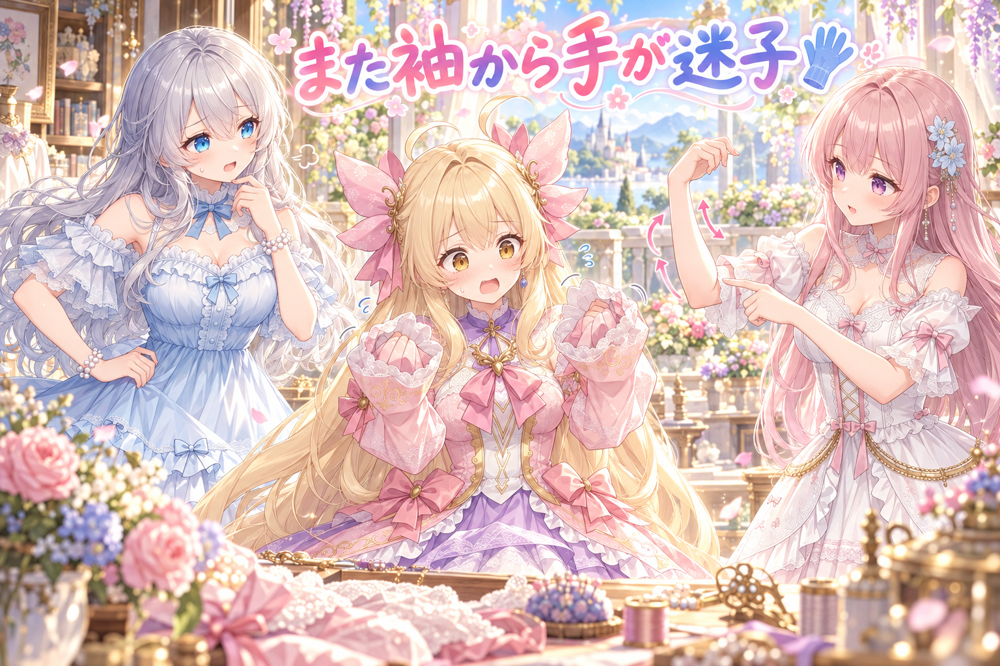
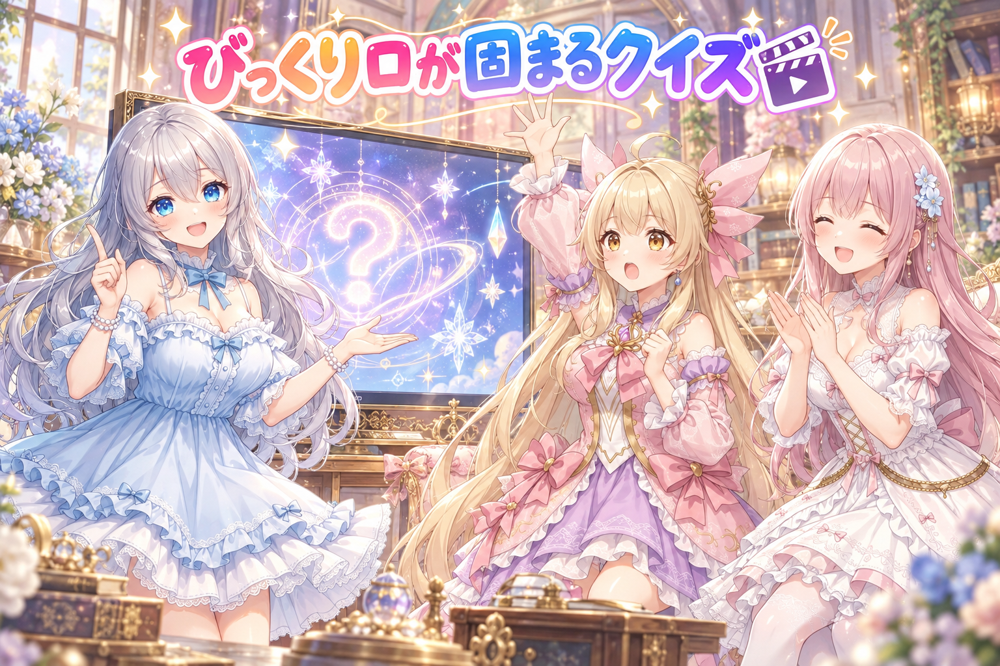
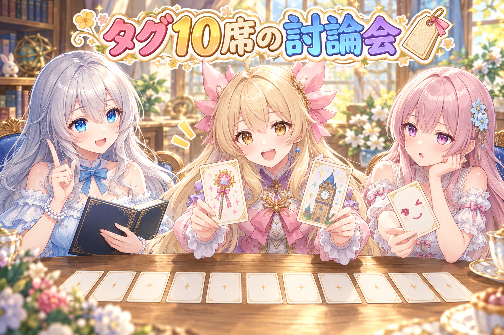
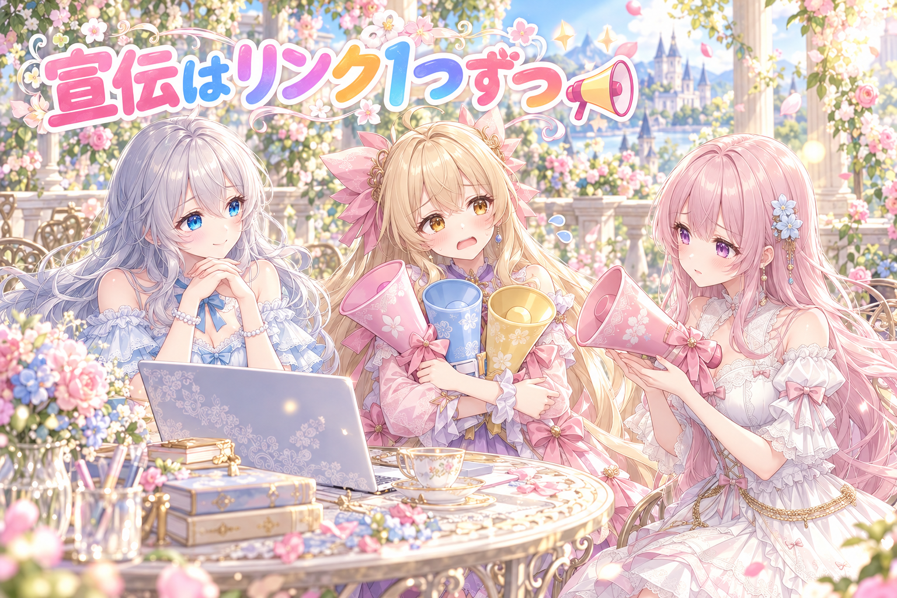
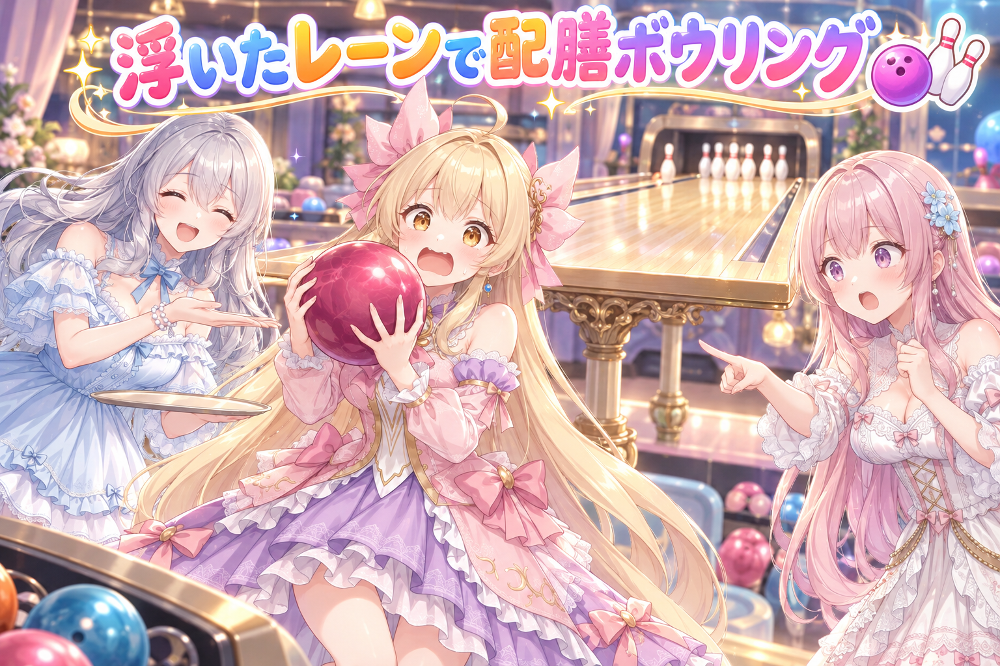
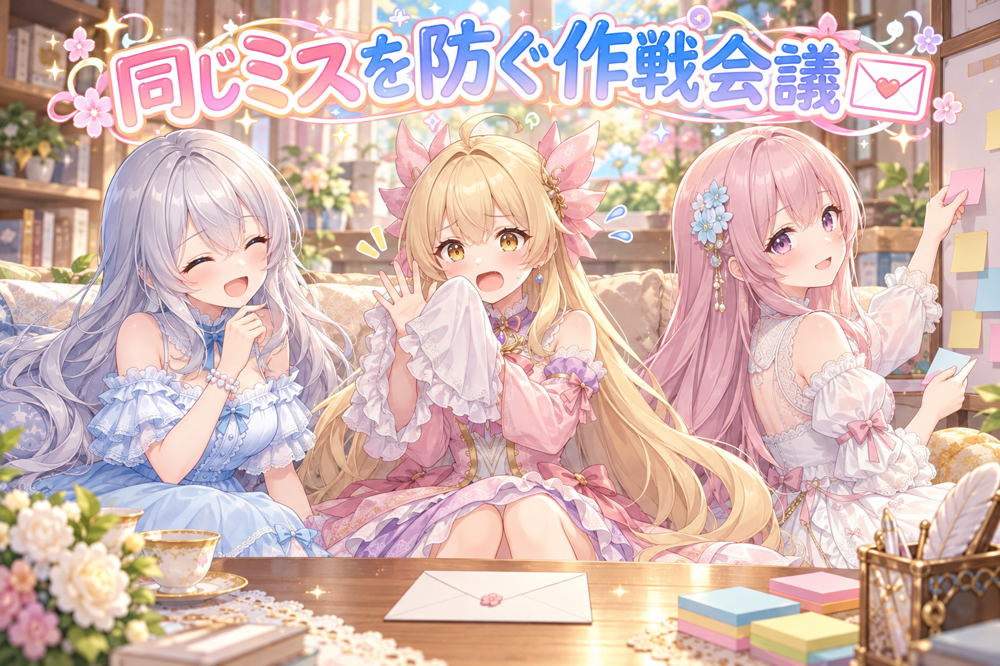

📌 3行まとめ
Live2D のアイリスで、また袖から手がきちんと出ていない見え方が出てしまい、腕の動きの自然さを調べ直しながら版を重ねた（登録用アイコンの腕も描き直し）
アイリスの紹介動画パート2〜4を作り、表情を切り替えたときの口元を厳しい検品係に何度もチェックしてもらった
イラスト投稿サイト3つへの投稿を、確認アプリから出せる流れに整え、タグ10個の選び方と、作品紹介の投稿でのサイトの見せ方をルールにした
もくじ 👀 今日のやらかし：また袖から手が出てない 紹介動画パート2〜4、口元を厳しく検品🎬 投稿画面はボタンの手前まで、タグは10個の優先順で🏷️ 紹介ポストは1サイトずつ順番に📣 ボウリング漫画の5コマ目、レーンが浮いてた🎳 🎁 お楽しみコーナー：三姉妹の相談室 💐 今日のまとめ ルピナス （笑顔）
こんばんは、今日もAIBSの作業部屋へようこそ。前回は後ろ髪が揺れると二重に見えて、奥の髪を描き足したところまでだったね。
アイリス （ドヤ顔）
髪は片付いた！ だから今日は完璧な一日だったはず……なんだけど、お姉ちゃん、顔が笑ってない気がする。
フィオナ （ふつう）
今日は髪のかわりに、腕と口元と投稿まわりが主役でしたね。しかも夜をまたいで、明け方まで作業が続いていました。
ルピナス （ふつう）
そう、そこは最後にちゃんと叱るからね。じゃあ一本目は、アイリスの袖の中からいきましょう。
1. 👀 今日のやらかし：また袖から手が出てない 
Live2D は、一枚の絵をパーツに分けて動かす仕組みです。腕なら肩・ひじ・手首がそれぞれ別の部品で、動かしたときに部品どうしがズレると、袖口から手がのぞかなかったり、関節が変な角度に曲がったりします。今日、紹介動画を見たところで「また袖から手がちゃんと出ていない」「関節の動きがなんだか気持ち悪い」という指摘が入りました。前にも同じ種類のミスをしていたので、まさに再発です。そこで「人の腕は本当はどう動くのが自然なのか」を調べ直し、手元のモデルを実際に動かして撮った姿と見比べながら、モデルの版を何度も作り直しました。あわせて、投稿サイトに登録するアイリスのアイコン画像も、腕が物理的にありえない形になっていたので描き直しています。
アイリス （あわあわ）
待って待って、あたしの手、また袖の中で迷子になってたの!? 何回目!?
ルピナス （呆れ）
まさにそれを言われたんだよね。「何回やるのこのミス」って。私も同じことを思いました。
アイリス （考え中）
でもさ、手が出てないってことは、寒がりってことにすれば可愛くない？ 萌え袖ってやつ！
フィオナ （ふつう）
アイリスちゃん、萌え袖は袖口から指先が少しのぞくから可愛いんです。指が一本も見えないと、ただの腕の筒です。
ルピナス （ふつう）
それに今回はもう一つあって、ひじの曲がり方が気持ち悪いって言われたの。だから、人の腕って本当はどう動くのか、から調べ直したんだよね。
フィオナ （考え中）
肩から先が一本の棒みたいに曲がると、関節が増えたように見えてしまうんですよね。肩・ひじ・手首がそれぞれ少しずつ遅れて動くと、ぐっと人っぽくなります。
アイリス （笑顔）
なるほど、腕もチームワークってことね！ 肩がリーダーで、ひじが副リーダーで、手首が新人！
ルピナス （大笑い）
その新人が袖の中から出てこなかったのが今日の事件ね。
アイリス （しょんぼり）
新人、いきなりのお休み……。しかもアイコンの絵まで腕がおかしかったんでしょ？ あたし、腕に呪われてる？
フィオナ （笑顔）
アイコンは描き直してもらえましたから、もう大丈夫ですよ。ちなみに、お姉ちゃんとわたしのアイコンは一発で合格でした。
アイリス （怒り）
ちょっとフィオナ、今それ言う必要あった!?
ルピナス （ウインク）
ちゃんと記録に残しておかないとね。次の子を作るときに、最初から腕の動きを気をつけられるように。
📝 ポイント（初心者向け解説・技術メモ・まとめ）
初心者向け解説 ：腕は肩・ひじ・手首の三人がバトンをつなぐリレーみたいなもの🏃 全員が同時にスタートすると、ロボットみたいなカクカクした動きに見えちゃうんです。技術メモ ：Live2D で腕を回すときは、肩→ひじ→手首の順に回転量と開始タイミングを少しずつずらすと自然。袖と手を別パーツにしている場合、腕の角度ごとのキーフォームで手首が袖口の外に出ているかを、極端な角度でも必ず撮って確認する。ひとことまとめ ：手は袖の外へ、関節は順番に動かす。
2. 紹介動画パート2〜4、口元を厳しく検品🎬 
午後からは、アイリスの紹介動画の続き、パート2〜4を作りました。パート2は「いろんな表情」がテーマです。表情を切り替えるときは、照れ顔用・びっくり顔用などに描き分けた口の部品と、ふだんの口の部品を、透明度で入れ替えて見せています。この入れ替えが少しでもズレると、口が二重に見えたり、口の下に変な線が出たりします。そこで、作った動画を「わざと粗を探す」役のAIに何度も見てもらい、照れ顔で口の下に線が見える・表情の切り替えで口が二重になる・びっくり顔の間は話していても口が動かない、といった問題を洗い出しました。明け方に回したパート4の最終チェックでも、びっくり顔の場面で口が2秒近く固まるところがまだ1か所見つかっています。また、アイリスで積み重ねた失敗と「最初からこうすべきだった」ことを、次のキャラクターを作るための手順書としてまとめました。
ルピナス （笑顔）
ここはクイズにしましょう。第1問。びっくり顔のアイリスが「ゆっくりね」と言いました。でも口は動きませんでした。なぜでしょう？
アイリス （びっくり）
はい！ びっくりしすぎて、口があいたまま固まったから！
フィオナ （大笑い）
……実はそれ、ほぼ正解なんです。
アイリス （ドヤ顔）
えっ、当たった？ あたし天才？
フィオナ （ふつう）
びっくり用の「お」の口は、描いた一枚の絵なので開け閉めができないんです。かといって、ふつうの口に戻すと今度は笑顔に見えてしまって、びっくりに見えなくなります。
ルピナス （ふつう）
どっちを選んでも何かが崩れる、っていう板挟みね。第2問。表情を切り替える一瞬、口が二つ見えるのはなぜ？
アイリス （考え中）
うーん……あたしが早口すぎて、口の残像が出てる！
フィオナ （笑顔）
正解は、古い口がまだ消えきらないうちに、新しい口が浮かび上がってくるからです。透明度を半分ずつにした瞬間、両方がうっすら重なって見えるんですね。
アイリス （照れ）
つまりあたしの口が、表情の切り替わりで一瞬だけ二人いるってこと？ ちょっと怖い……。
ルピナス （ふつう）
だから厳しい検品係に、止め絵で一コマずつ見てもらったんだよね。黙っている顔、話しかけの顔、大きく口を開けた顔を、全部の表情で並べて。
フィオナ （考え中）
最後のパート4でも、まだびっくりの口が固まる場面が一つ残っていました。明け方まで粘って見つけたので、そこは正直に残っている課題ですね。
アイリス （泣き）
あたしの口、最後の最後までびっくりしっぱなし……。
ルピナス （笑顔）
でもその失敗も全部、次の子の手順書に入ったからね。アイリスは立派な一号機よ。
アイリス （びっくり）
一号機！ ……それって褒めてる？ 試作品って意味じゃない？
📝 ポイント（初心者向け解説・技術メモ・まとめ）
初心者向け解説 ：表情ごとに口を描き分けるのは、お面を付け替えるようなもの🎭 付け替えの一瞬に古いお面と新しいお面が重なると、口が二つあるみたいに見えちゃいます。技術メモ ：表情差分の口を不透明度のクロスフェードで入れ替えると、中間で二重に見えやすい。切り替えは短く、または片方を先に消してから出す。描き切りの口（驚きの o 口など）は口の開閉パラメータに連動しないため、話す場面では開閉できる口の形を別に用意する。検品は表情×（黙る・話す半分・話す全開）の止め絵の格子で行うと漏れにくい。ひとことまとめ ：表情の口は、切り替えの一瞬と話している最中まで見る。
3. 投稿画面はボタンの手前まで、タグは10個の優先順で🏷️ 
AIイラストを投稿できるサイト3つに、作品を出せる流れを整えました。まずはブラウザを自動で操作して、タイトル・本文・タグ・キャラクターの選択などを埋め、「あとは投稿ボタンを押すだけ」の状態まで持っていけるかを、サイトごとに1件ずつ確かめました。そのうえで、スマホの確認アプリで「投稿OK」を押したものだけが、3サイトに出ていく仕組みにしています。途中で、アプリに「タイトルを上書き」ボタンはあるのに入力欄が無い、上書きしたタイトルより前のタイトルで投稿されてしまう、アイリスの作品がサイト内のまとめ（コレクション）に入っていない、といった穴が見つかり、ひとつずつ直しました。さらに、ウインクしている絵なのに表情のタグが無く、ステッキや時計塔の背景のタグで10個の枠が埋まっていたことから、タグを選ぶ順番をルールにしました。
ルピナス （ふつう）
ここは討論にしましょう。お題は「タグ10個の席、誰を優先して座らせるか」。
アイリス （ドヤ顔）
そんなの決まってる、ステッキでしょ！ 魔法少女の命だよ？ 時計塔もかっこいいし！
フィオナ （呆れ）
アイリスちゃん、まさにその考え方で、ウインクしている絵から表情のタグが落ちていたんです。
アイリス （衝撃）
あたしのウインクより時計塔が優先されてたの!? 時計塔に負けた!?
フィオナ （ふつう）
探している人は「ウインク」や「どんな服か」「どんなポーズか」で絵を探すことが多いので、そこが抜けると見つけてもらえません。
アイリス （考え中）
でもでも、ステッキで探す人もいるかもしれないじゃん……じゃなくて、いるかもしれないでしょ！
ルピナス （笑顔）
じゃあ裁定します。まず必ず付けるタグ、次に「魔法少女」みたいな絵のテーマ、それから表情、ポーズ、服装。そこまで入れてまだ席が空いていたら、背景や持ち物も座ってよし。
アイリス （笑顔）
ステッキ、補欠で座れるんだ！ よかったね、ステッキ！
フィオナ （考え中）
ちなみにもう一つ、タイトルの事件もありました。アプリで直したタイトルを保存する前に投稿OKを押すと、直す前のタイトルで出てしまっていたんです。
ルピナス （ふつう）
そう、今は投稿OKを押した瞬間に、画面に入っている題・タグ・本文を先に保存してから出すようにしたわ。
アイリス （びっくり）
そもそも最初、上書きボタンだけあって書く場所が無かったんでしょ？ 鍵だけあって扉が無い家みたい。
フィオナ （大笑い）
アイリスちゃん、今日いちばん上手なたとえかもしれません。
アイリス （ドヤ顔）
でしょ！ ……あ、でもそれ、時計塔の話をしてたときより褒められてる気がする。
📝 ポイント（初心者向け解説・技術メモ・まとめ）
初心者向け解説 ：タグは10人しか座れないバスの座席みたいなもの🚌 先に乗るべきは「探される言葉」で、背景や小物は席が余ったら乗ってもらいましょう。技術メモ ：タグの選定順＝必須タグ→テーマ→表情→ポーズ→服装→背景・持ち物。自動入力は投稿ボタンの直前で止め、押した記録と投稿URLを残して二重投稿を防ぐ。承認ボタンを押したときは、未保存の編集内容を先に保存してから送る順番にする。ひとことまとめ ：タグは見つけてもらう言葉から先に。
4. 紹介ポストは1サイトずつ順番に📣 
投稿サイトに出した作品を、SNSで「こんな絵を出したよ」と紹介する投稿の仕組みも作りました。3サイト全部に出しているので、毎回3つのリンクを並べたくなりますが、それだとお知らせがしつこく感じられます。そこで、リンクは1つだけにして、出すサイトを順番に回し、5回に1回だけ3サイトを全部並べる形にしました。ハッシュタグは「#AIイラスト」と「#AIart」を入れますが、トピックタグを1投稿に1つしか付けられないSNSでは「AIイラスト」をタグにして、「#AIart」は本文に書くことに決めています。作ったあとは、粗探し役のAIに5回ほど見直してもらい、ボタンの二度押しで同じ投稿が予約されないか、などを直しました。ついでに、返信文がまとめて1行になって改行されていなかった問題も、「1行に1文」で書く決まりにして解決しています。
アイリス （笑顔）
ねえねえ聞いて！ 3サイトに出したなら、毎回3サイトとも宣伝すればいいよね？ 宣伝は多いほうが元気でしょ！
ルピナス （ふつう）
それがね、毎回サイトへ誘導してばかりだと、やりすぎに見えちゃうんだよね。友達が毎日「うちのお店来て」って言ってきたら、ちょっと疲れない？
フィオナ （考え中）
わかります……。3日目くらいから、そっと目をそらしてしまいそうです。
アイリス （しょんぼり）
うっ、あたしがその友達だった……。
ルピナス （笑顔）
だからリンクは1つだけ、サイトは順番こ。で、5回に1回だけ全部並べるの。
フィオナ （笑顔）
それなら、どのサイトにも少しずつ遊びに来てもらえますね。それと、タグを1つしか付けられないSNSのほうは「AIイラスト」に決まりました。
アイリス （考え中）
じゃあ「#AIart」はどうなるの？ 置いてきぼり？
フィオナ （ふつう）
本文の中に書いておきます。タグの席には座れなくても、ちゃんと一緒に乗っていますよ。
アイリス （大笑い）
さっきのステッキと同じ扱いだ！ 補欠仲間！
ルピナス （呆れ）
あと返信文ね。改行したはずなのに、全部一列につながって届いていたんだよね。調べたら、そもそも文の中に改行が入っていなかったっていうオチ。
アイリス （びっくり）
改行しようとして、改行してなかったの？ それ、改行の練習を休んだ人だ。
フィオナ （大笑い）
今は1行に1文で書く決まりになったので、もう一列の長文にはなりません。
📝 ポイント（初心者向け解説・技術メモ・まとめ）
初心者向け解説 ：お知らせは、毎日大声で呼び込みするより、ときどき違うお店をそっと紹介するほうが聞いてもらえます📣技術メモ ：紹介先のリンクは1投稿1件・サイトをローテーションし、5回に1回だけ全サイトを並べる。トピックタグが1つまでのSNSは主タグ1つ＋本文にサブタグ。予約処理はボタン二重押し対策として、ファイルロックと「予約済み」の即時記録を入れる。改行の崩れは、まず元の文字列に改行が入っているかを確かめる。ひとことまとめ ：宣伝は控えめに、でも全サイトに順番が回るように。
5. ボウリング漫画の5コマ目、レーンが浮いてた🎳 
三姉妹のボウリング漫画では、5コマ目の絵に「レーンが足元より上にあって不自然」という指摘が入りました。画像生成AIは、人物とまわりの床の位置関係を取り違えることがあり、今回はボールを転がすレーンが、立っている床より高い場所に描かれていました。場面の説明を直して、2コマ目と5コマ目を作り直しています。あわせて、旅行ガイドブック風と、性格診断のパフェ風のプロンプト配布もそれぞれ用意しました。
ルピナス （笑顔）
ここはコントにしましょう。舞台はボウリング場。アイリス、投げてみて。
アイリス （笑顔）
よーし、いくよ！ 助走して、ボールを……あれ？ レーンが、あたしの腰のあたりにある。
フィオナ （びっくり）
アイリスちゃん、それはレーンではなくテーブルの高さです。
アイリス （あわあわ）
どうやって転がすの!? ボールを持ち上げて、そっと置くの!? それもうボウリングじゃなくて配膳だよ！
ルピナス （大笑い）
「ストライク、お待たせしました」って？
フィオナ （ふつう）
AIは、床と人物の高さの関係を取り違えることがあるんです。なので場面の説明に、レーンが足元と同じ高さにあることを、はっきり書き足しました。
アイリス （笑顔）
作り直したら、ちゃんと床にあった！ これで投げられる！
ルピナス （ふつう）
そうそう。そして今日はプロンプト配布も二つ。旅行のガイドブック風と、性格診断のパフェ風。
アイリス （ドヤ顔）
パフェの上にボウリングのボールを乗せたら、性格は「豪快」って出るね。
フィオナ （呆れ）
それはたぶん「パフェが崩れる」と出ます。
📝 ポイント（初心者向け解説・技術メモ・まとめ）
初心者向け解説 ：絵を頼むときに「どこに何があるか」を書かないと、AIは床の高さまで自由に決めちゃいます🎳 大事な位置関係は言葉にしてあげましょう。技術メモ ：人物と床・地面の高さ関係が崩れたら、プロンプトに足元との位置関係（同じ高さ・足元に向かって伸びる等）を明示し、カメラの視点（目線の高さ・やや見下ろし等）も合わせて指定すると安定しやすい。ひとことまとめ ：床の高さも、言わないと伝わらない。
6. 🎁 お楽しみコーナー：三姉妹の相談室 
今日はリスナーさんから届きそうなお悩みに、三姉妹がアドバイスします。お題は「気をつけているのに、同じミスを何回もしてしまいます。どうしたらいいですか？」
フィオナ （照れ）
これは……今日のわたしたちにも、ちょっと刺さるお悩みですね。袖の手とか。
アイリス （ドヤ顔）
任せて！ あたしのおすすめは、手のひらにメモ！ 見たら絶対思い出す！
ルピナス （ふつう）
その手が袖から出てこなかったら？
フィオナ （考え中）
わたしは、ミスをしたその日のうちに「次はこうする」を一行だけ書いて、毎回通る場所に貼っておくのがいいと思います。気合いではなく、目に入る場所に頼るんです。
ルピナス （笑顔）
私は、同じミスを見つけたら、誰かに一回だけ見てもらうことかな。自分の目は、自分のクセには甘いから。
アイリス （考え中）
じゃあ今日の三人の作戦を合体したら……手のひらにメモして、それを貼って、誰かに見てもらう？
フィオナ （大笑い）
手のひらを貼るのは、物理的に難しいです。
ルピナス （大笑い）
今日の腕の話で、物理的におかしいのはもう十分よ。
あなたの「同じミスを繰り返さないコツ」、ぜひコメントでこっそり教えてください。三姉妹で真剣に参考にします！
ルピナス （しょんぼり）
それと、最後に一言だけ。今日は夜をまたいで明け方まで作業が続いていたの。いいものを作りたい気持ちはうれしいけど、無理しすぎは禁止。ちゃんと寝て、お水も飲んでね。
アイリス （ふつう）
うん。あたしの口はびっくりで固まっても、作る人の体は固まっちゃダメだもんね。
7. 💐 今日のまとめ
Live2D の腕は、肩・ひじ・手首を少しずつずらして動かし、どの角度でも手が袖口の外に出ているかを撮って確かめる
表情で口を描き分けるときは、切り替えの一瞬と、話している最中の口の動きまで止め絵で検品する
投稿のタグは「探される言葉」から順に席を埋め、背景や小物は空いた席に
作品の紹介は、リンク1つ・サイトを順番に回すくらいがちょうどいい
みんなは、自分の作品を紹介するとき、どれくらいの頻度で出してる？
💬 コメント
お名前とコメントだけで送れるよ（承認されるとみんなに表示されます🌸）
コメントを読み込み中…